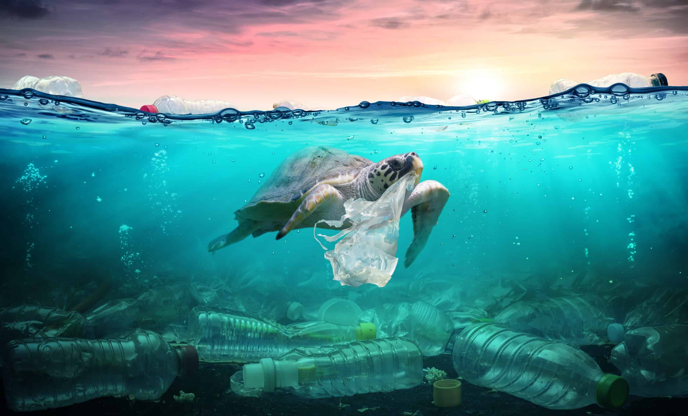
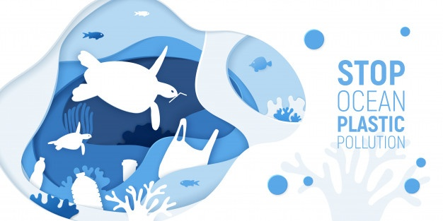
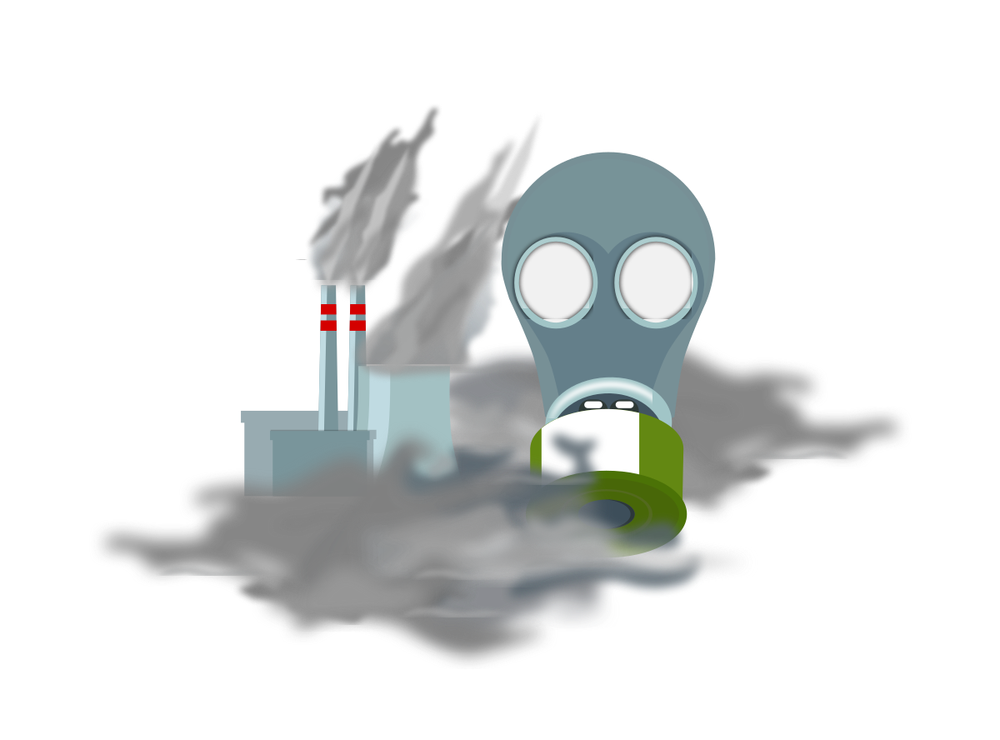
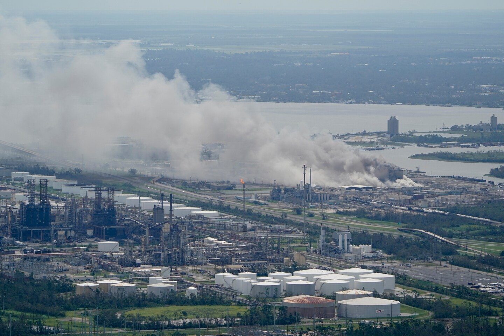

Water Pollution
When the water in our rivers, lakes, and oceans becomes polluted; it can endanger wildlife, make our drinking water unsafe, and threaten the waters where we swim and fish. EPA research supports efforts under the Clean Water Act and Safe Drinking Water Act.
Eight million metric tons of plastic waste enter the oceans every year. This equates to one garbage truck’s worth of plastic being dumped into our oceans every minute. On top of that, models project that by 2050, there will be more plastic by weight than fish in the oceans.
Whales, fish, seabirds, turtles and many other animals are eating the plastic and dying en masse. There are many studies in process exploring the relationship between human health problems and consuming fish that contain microplastics (bottles and other single-use items that have broken down).
The Impact of COVID-19
COVID-19 triggered an estimated global use of 129 billion face masks and 65 billion gloves every month. There are practical problems with gloves and masks:
- Can easily be mistaken for jellyfish, a favorite food of sea turtles
- Increased risks of entanglement for a wide variety of fish, animals and birds.
In the Western world, much of it ends up either in landfills (in North America) or incinerated (in Europe), and a small amount—10 percent on average—gets recycled. The U.S. has about 9,000 recycling facilities, most of which are run by municipalities and tied to local budgets. As states bear the brunt of COVID-19-related health and unemployment costs, some municipalities are suspending their recycling services.
In the developing world, plastic often ends up mismanaged in open dumps, eventually leaking into the environment, ultimately making its way into rivers and then into the oceans. Much of the minimal funding directed to waste management infrastructure in developing economies has been reappropriated as a result of the virus.
Help Protect Water Sources
Use and Dispose of Harmful Materials Properly
Don't pour hazardous waste down the drain, on the ground, or into storm sewers. This could contaminate the soil, groundwater, or nearby surface water.
Think Twice about Lawn and Garden Chemicals
Limit the use of pesticides or fertilizers, and always follow the label directions. Many fertilizers and pesticides contain harmful chemicals which can travel through the soil and contaminate groundwater or run off in stormwater to rivers, streams, and lakes.
Properly Maintain Your Septic System
Groundwater can be contaminated by poorly or untreated household wastewater, which poses dangers to drinking water and to the environment. Malfunctioning septic systems release bacteria, viruses, and chemicals to local aquifers and waterways. The average household septic system should be inspected at least every three years by a septic service professional.
Use the Reusable
The reusable things aren’t something new to hear. Plastic bags, straws, cups, and other stuff end up in landfills, or they make their way into rivers, streams and finally to the sea, where they become a disaster for the sea animals. The plastic items need centuries to decompose, and lots of them don’t decompose at all, staying in the ground forever and polluting it.
Help Recycling
Lots of things we use may become the raw materials and be used to produce the next generation of things. The color-coded trash bins show where each of these components can be put to be recycled in a proper way.
Air Pollution
EPA determined in 2009 that emissions of carbon dioxide and other long-lived greenhouse gases that build up in the atmosphere endanger the health and welfare of current and future generations by causing climate change and ocean acidification. Long-lived greenhouse gases, which trap heat in the atmosphere, include carbon dioxide, methane, nitrous oxide, and fluorinated gases. These gases are produced by numerous and diverse human activities.
The risks to public health and the environment from climate change are substantial and far-reaching. Scientists warn that carbon pollution and resulting climate change are expected to lead to more intense hurricanes and storms, heavier and more frequent flooding, increased drought, and more severe wildfires. The combined effects of ambient (outdoor) and household air pollution cause increased mortality from stroke, heart disease, chronic obstructive pulmonary disease, lung cancer and acute respiratory infections.
- 4.2 million deaths every year occur as a result of exposure to ambient (outdoor) air pollution
- 3.8 million deaths every year as a result of household exposure to smoke from dirty cookstoves and fuels
- 91% of the world’s population live in places where air quality exceeds WHO guideline limits
Impact of Hurricane Laura
Hurricane Laura tore through a region that is home to dozens of major oil refineries, petrochemical plants and plastics facilities. Now, residents could be breathing dangerously polluted air from those sites, public health experts and local advocates say. The pollution began before the storm even made landfall. In the two days before the storm arrived, facilities in Texas released more than 4 million pounds of extra air pollution, according to reports the companies made to state environmental regulators.
The Impact of COVID-19
At the outset, it seemed that there might be an environmental silver lining to the global pandemic. With social distancing keeping people off the roads and out of the skies, air quality has seen drastic improvements around the world. Carbon emissions are projected to fall by 4 percent in 2020 compared to 2019. In China, the extended shuttering of factories temporarily cleared the country’s infamous smog and significantly lowered pollution rates.
Help Reduce Air Pollution
Every time we drive to school, use our heater or air conditioner, clean our windows, or even style our hair, we make choices that affect air pollution. These steps, as well as many others, are things we all can do to help reduce air pollution.
- Conserve energy – turn off lights, computers, and electric appliances when not in use
- Use energy efficient light bulbs and appliances
- Participate in your local utility’s energy conservation programs
- Limit driving by carpooling, using public transportation, biking and walking
- Combine errands for fewer trips
- Keep your automobile well tuned and maintained. Follow the manufacturer’s instructions on routine maintenance, such as changing the oil and filters, and checking tire pressure and wheel alignment.
- Avoid excessive idling of your automobile
- Drive electric or plug-in hybrid electric vehicles
- Use electric or hand-powered lawn care equipment
- Be careful not to spill gasoline when filling up your car or gasoline powered lawn and garden equipment
- Run dishwashers and clothes washers only when full
- Choose environmentally friendly cleaners